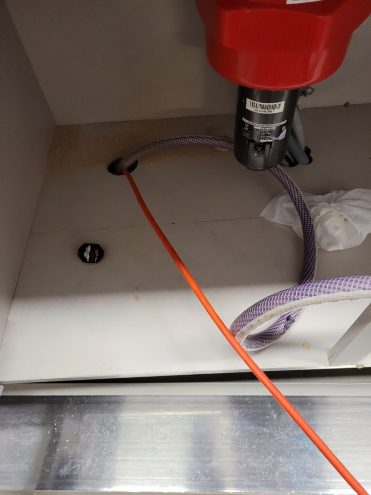
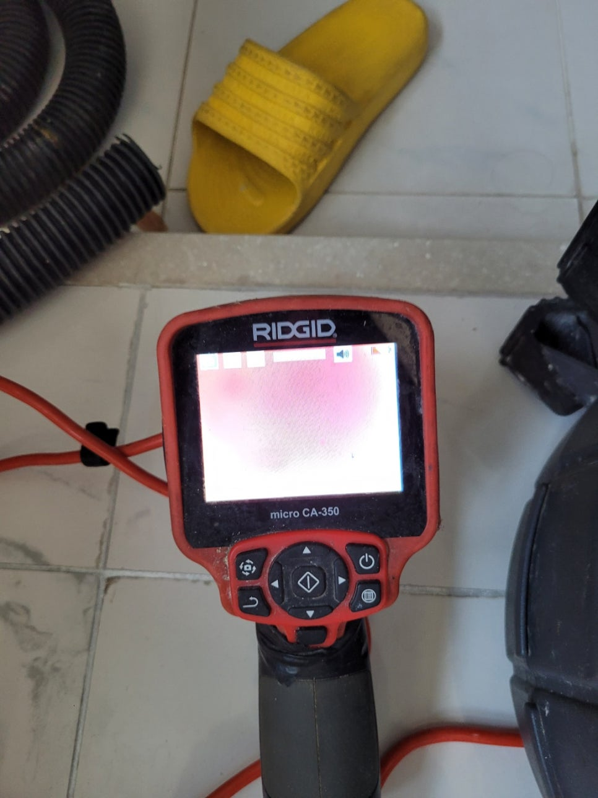
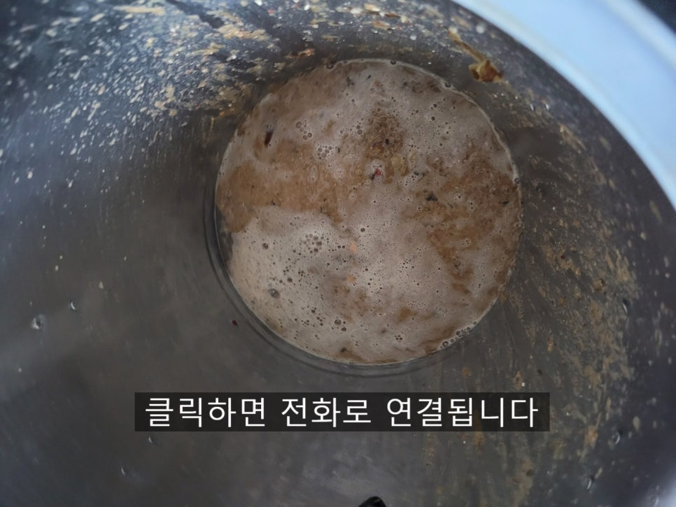
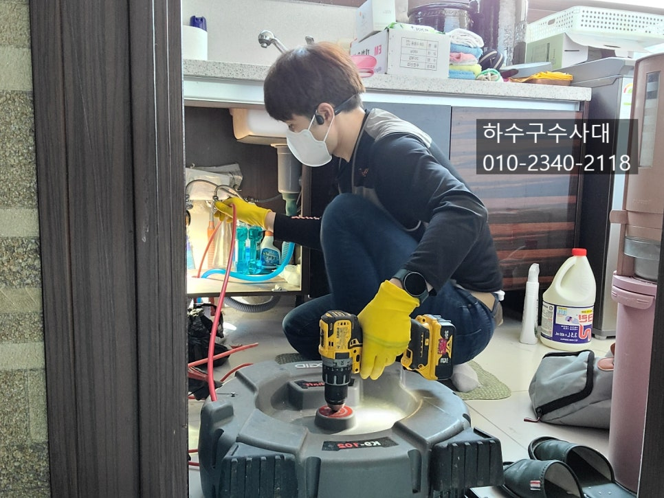
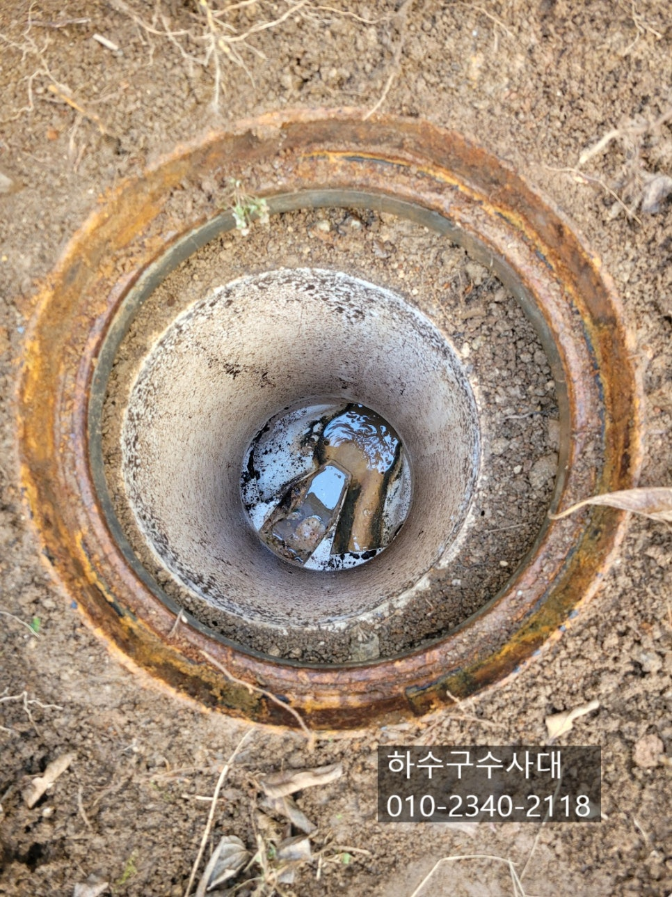
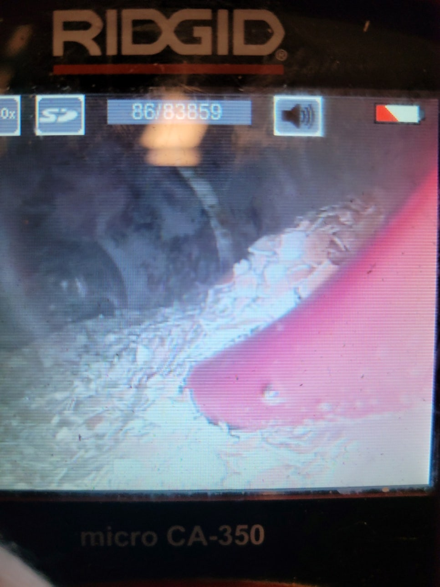
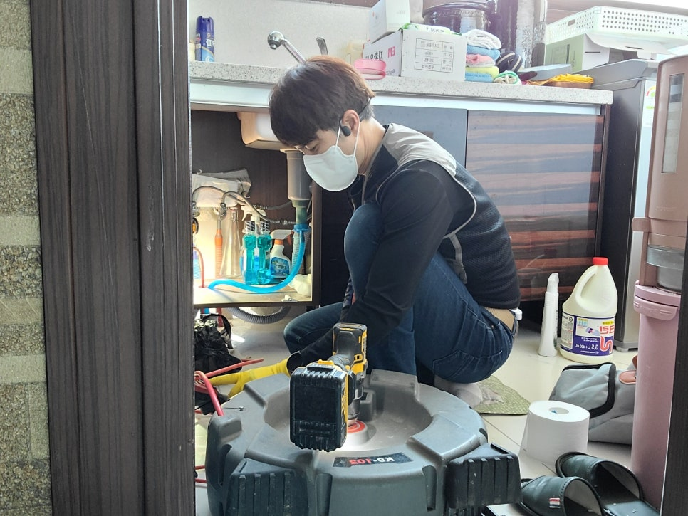

🏠 영통구하수구막힘 망포동 신동 광교 싱크대막힘
수원 망포동 싱크대막힘 전문 시공 후기

📋 작업 개요
- 위치: 수원 망포동, 망포동, 수원
- 서비스 유형: 싱크대막힘, 하수구막힘, 배관막힘, 역류해결, 뚫는업체, 배관청소, 고압세척
- 작업 일시: 2022. 3. 4. 19:04
- 업체명: 하수구수사대 (010-5615-2118)
🔍 문제 상황
영통구하수구막힘 망포동 신동 광교 싱크대막힘
안녕하세요
"하수구수사대"입니다.
하수구가 막히면 우선적으로 펑크린이나 뚜러펑종류의
세정제를 부어주거나 철물점에서 쉽게 접할수 있는
뚫는 스프링으로 쑤셔보기도 하실겁니다.
단순하게 막혔을 경우는 이렇게 해결이 가능하기도 한데요
깊은곳과 기름덩어리가 많이 쌓였다면 또 다시 문제가
생겨 납니다.
오늘은 싱크대물을 틀면 하수구에서 물이 역류하는
단독주택을 다녀온 내용을 포스팅 해보겠습니다.
오늘 방문한곳은 음식물처리기를 사용하는 곳인데요
음식물처리기에는 계란껍질이나 뿌리채소, 생선뼈 등등
넣지말아야 할 음식물들이 많은데요 이를 숙지하지
못하거나 무시하고 갈아버리는 경우가 많답니다.

🔎 원인 분석
💡 전문가 진단: 정밀 진단 장비를 사용하여 슬러지의 고착 여부를 판명하고 타격/세척 작업을 실시했습니다.
내시경으로 배관내부를 보니 막혀있어 시야가 확보가
되지 않기에 석션작업과 청소작업을 진행 하기로 하였습니다.
석션장비는 배관에 이물질을 뽑아내는 장비로
기초적인 장비로 쉽게 해결이 되는 경우도 있지만
먼 구간에서 막히거나 배관에 기름이 딱딱하게
굳어 붙어있는 경우는 흡입하기가 어렵답니다.
장비를 투입하여 배관청소를 병행하게 되는데요
내시경카메라로 확인을 하면서 이물질을 제거한답니다.
오늘 방문한곳은 단독주택으로 싱크대,세탁실,욕실 하수구와 하나로
연결되어있고 2층과도 같이 연결되어 있어서
2층에서 사용을해도 역류하는 증상이 있었어요.
아파트의 배관은 대부분 싱크대배관,욕실배관,세탁실 배관이
따로따로 되어 있는데요 윗층들과 함께 사용하기 때문입니다.
결국 밑에서는 하나로 만나게 되어있어요.
위 사진은 오수받이에요 오늘 방문한곳은
오수와 하수가 이곳으로 모두 나오게 되어있습니다.

🔧 작업 과정
오수받이는 건물주인이 주기적으로 관리를 해줘야하는데요
간혹 오수받이 관리 소홀로 막히는 경우도 생겨난답니다.
단독주택의 경우 배관이 길어서 구배가 좋지 않은
구간에 기름이 쌓여 막히는 경우가 많습니다.
특히나 음식물처리기를 사용하면 음식물이 갈려서
기름기와 함께 배관에 더 잘 붙게되기 때문에
관리를 더욱 신경써서 해줘야 하는데 배관 내부를
볼수도 없으니 실질적으로 관리방법은 물을 많이
흘려보내주거나 펑크린이나 뚜러펑같은 세정제를
주기적으로 부어주는것이 좋답니다.
배관이 어느정도 깨끗해진 상태에서 내시경카메라로
확인을 해보니 갈아낸 계란껍질이 바닥에 수북히 쌓여있었어요.
갈아낸 계란껍질은 배관에 머물러있고 잘 흘러나가지
않아요. 마치 계란무덥같은데요 아무래도 계란껍질도
배관막힘의 영향을 준거 같네요.
최대한 플렉스샤프트를 이용하여 계란껍질을
흘려보내는 방식으로 제거를 하기로 하였습니다.
배관 깊숙한곳이 있기 때문에 완벽하게 제거하려면
고압세척을 해야해요.
하지만 바닥에 조금 깔려있다면 크게 신경 안쓰셔도 된답니다.
다만 앞으로 계란껍질을 갈면 안되겠죠?!^^
내시경카메라로 배관상태를 확인한후 물을 내려보는
테스트를 해주었습니다.
음식물처리기가 장점도 있지만 이렇게
잘못 사용하면 단점도 생기게 된답니다.


✅ 작업 완료
음식물처리기를 설치하기전에 배관상태를
점검하는것도 좋은 방법인데요 싱크대위에
물을 많이 받아서 내렸을때 물이 역류하지 않는지
확인해보는것도 좋은 방법입니다.
"하수구수사대"는 수도권전지역 방문가능하오니
하수구막힘으로 고민중이시라면 언제든지 연락주세요^^
경기도 수원시 권선구 곡반정로97번길 9 5층




⚠️ 주방 싱크대 배관 막힘 예방 수칙
- ✅ 기름기가 묻은 식기나 프라이팬은 설거지 전 키친타올로 반드시 기름때를 닦아내세요.
- ✅ 주기적으로 싱크대 개수대에 뜨거운 물을 가득 받아 한 번에 내려 배관 내부 기름을 씻어내세요.
- ✅ 배수구 거름망을 미세한 필터로 사용하시고 음식물 찌꺼기가 틈으로 새어 들지 않게 관리하세요.
- ✅ 베이킹소다와 식초를 뜨거운 물과 함께 일주일에 한 번씩 부어주면 배관 살균과 막힘 예방에 좋습니다.
💡 핵심 정리
- 확실한 장비 작업(내시경 점검 및 샤프트 스케일링)으로 원인을 뿌리 뽑습니다.
- 작업 후 1년 이내에 동일한 부위 재발 시 100% 무상 A/S 서비스를 보장합니다.
- 서울 · 경기 · 인천 전 지역에 24시간 언제든 긴급 출동할 수 있도록 항시 대기 중입니다.
❓ 자주 묻는 질문 (FAQ)
🚨 수원 망포동 싱크대막힘 문제로 고민이신가요?
정확한 원인 진단과 확실한 시공으로 재발 없는 해결을 약속드립니다.
24시간 긴급 출동 | 서울 · 경기 · 인천 전지역 | 1년 내 재발 시 무상 A/S